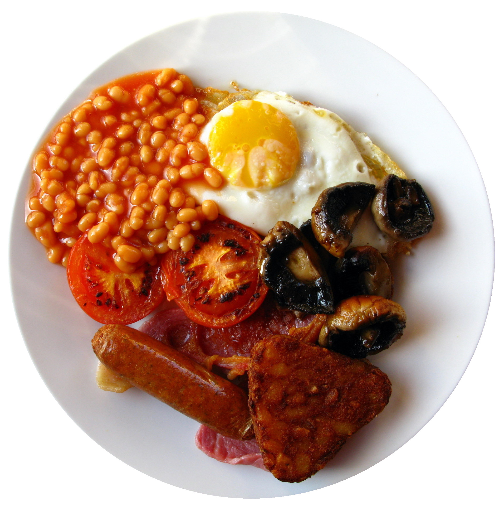

Full English Breakfast
Description
A full English breakfast is a hearty, traditional meal that brings together a rich variety of savory flavors on one plate. Typically, it includes crispy bacon, plump sausages, fried or scrambled eggs, grilled tomatoes, baked beans, and golden toast or fried bread. Many versions also feature mushrooms, black pudding, and hash browns for extra substance.
Everything is cooked to perfection, creating a comforting combination of textures from the crisp edges of bacon to the creamy eggs and warm, tangy tomatoes. Often enjoyed with a cup of strong tea or coffee, the full English breakfast is a beloved classic that sets the tone for a satisfying start to the day.
Ingrediants
- 4 sausages
- 4 slices of bacon
- 2 eggs
- 1 cup baked beans
- 1 tomato, halved
- 4-6 mushrooms, sliced or whole
- 2 slices of bread (for toast or fried bread)
- Butter or oil for frying
- Salt and pepper to taste
Steps
- Cook the sausages: Heat a large frying pan or skillet over medium heat and cook the sausages until browned and cooked through (about 10-12 minutes).
- Add the bacon: Fry until crisp and golden. Move to a warm plate to keep hot.
- Cook the mushrooms and tomato: In the same pan, sauté the mushrooms until soft, and grill or fry the tomato halves cut-side down until lightly charred.
- Warm the baked beans: Heat gently in a small saucepan.
- Cook the eggs: Fry or scramble the eggs in butter or oil to your liking.
- Toast or fry the bread: Toast it lightly, or fry slices in the pan drippings for extra flavor.
- Assemble the plate: Arrange everything neatly — sausages, bacon, eggs, beans, mushrooms, and tomatoes — and season to taste.